The Phase Distribution is one of the main menu selections. Its function is to display a breakdown of the software effort and schedule into the phases of the development cycle. COCOMOII offers support for two different development cycles, the waterfall model and the mbase model. The waterfall model consists of the phases: plans & requirements, design, programming and integration & test. These phases are described as follows:
Plans & Requirements - In this phase, a statement for the required functions, interfaces and performance is created. These expectations are used to define the capabilities of the software product as expressed by representatives of all interested parties.
Product Design - In this phase, a hardware/software architecture, control structure and data structure for the product are defined. A draft of the user's manual and test plans are also created during this phase.
Programming - In this phase, the design of the previous phase is implemented in the creation of complete sets of software components.
Integration & Test - In this phase, the various software components are brought together in order to achieve a properly functioning software product composed of loosely coupled modules. The requirements as defined in the first phase are used to determine the fitness of the delivered product.
The Mbase model is an implementation of the spiral model. A well-defined set of common milestones serve as the endpoints between which COCOMOII estimates and actuals are counted. These milestones consist of the phases inception, elaboration, construction and transition. Inception covers the period of time from Inception Readiness Review (IRR) to the definition of LifeCycle Objectives (LCO). Elaboration covers the period of time from LCO to Life Cycle Architecture (LCA). Construction spans the time from LCA to Initial Operational Capability (IOC). The final phase is Transition which covers the time from IOC to Product Release Review (PRR).
In either the waterfall model or the Mbase model, the phase distribution menu has two selections: project phase distribution and module phase distribution. The project phase distribution allows the user to view the development phases for the entire project all together or individually. The module phase distribution allows the user to view the development phases for a particular module either all together or individually. These two variations of phase distribution are discussed further in this chapter.
FIGURE 6-1 Waterfall Phase Distribution Sub-menu
6.1 WaterFall Model - Project Phase Distribution
In order to view the phase distribution of an entire project, the user can click on the Waterfall Project Phase Distribution button under the Phase Distribution menu (see FIGURE 6-1). Four formats for viewing will appear in another menu: overall phase, plan & requirements, programming, and integration & test. Each of these menu selections will be discussed in later sections. The phase distribution of plan & requirements, programming and integration & test are broken down into sub-phases. These phases include: requirements analysis, product design, programming, test planning, verification & validation, project office, CM/QA, and manuals. For each of these sub-phases the percentage of the phase, the estimated effort, the estimated schedule, and the estimated FSWP are displayed. A description of each of these sub-phases follows:
Requirements analysis: Determination, specification review and update of software functional, performance, interface, and verification requirements.
Product Design: Determination, specification, review and update of hardware-software architecture, program design, and database design.
Programming: Detailed design, code, unit test, and integration of individual computer program components. Includes programming personnel planning, tool acquisitions, database development, component level documentation, and intermediate level programming management.
Test Planning: Specification, review, and update of product test and acceptance test plans. Acquisition of associated test drivers, test tools, and test data.
Verification & Validation(V&V): Performance of independent requirements validation, design V&V, product test, and acceptance test. Acquisition of requirements and design V&V tools. "Are we building the product right?" and "are we building the right product?"
Project Office Functions: Project level management functions. Includes project level planning and control, contract and subcontract management, and customer interface.
Configuration Management and Quality Assurance (CM/QA): Configuration management includes product identification, change control, status accounting, operation of program support library, development and monitoring of end item acceptance plan. Quality assurance includes development and monitoring of project standards, and technical audits of software products and processes.
Manuals: Development and update of users' manuals, operators' manuals and maintenance manuals.
6.1.1 Waterfall Overall Project Phase
The overall phase distribution allows the user to view an entire project's estimated effort, schedule and number of personnel needed for phase completion. Upon clicking on "Overall Phase," a window will be displayed showing the phase breakdown of the current project in COCOMO (see FIGURE 6-2). This window displays the project name, project SLOC, and the total estimated effort for the project. This information can be seen in the upper left corner of the window.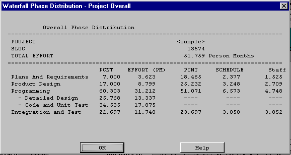
FIGURE 6-2 Waterfall Phase Distribution Window Displaying Overall Phase Distribution
In addition, each phase of the project's development cycle is represented by the estimated effort, the estimated schedule and the estimated number of personnel needed for phase completion. Again looking at FIGURE 6-2, the information has been separated into columns. The first column displays the phase name. The second column displays the percentage that the corresponding phase takes in the estimated effort. The third column displays the estimated effort for each phase. The fourth column displays the percentage of the estimated schedule that is dedicated to the corresponding phase's completion. The fifth column displays the estimated schedule for phase completion. And the last column displays the estimated number of personnel needed for phase completion (FSWP).
Note: The programming phase has been broken down into two additional phases: "Detailed Design" and "Code and Unit Test." The detailed design is a follow-up to the product design phase. In this sub phase, those points developed in the product design are elaborated to a point necessary to breakdown agreed functions into units necessary for coding. The code and unit test sub-phases house the actual coding effort of the individual units of code. The testing of these units (upon completion) is also encompassed within this sub phase.
6.1.2 Waterfall Plans and Requirements Project Phase
The plans and requirements phase distribution allows the user to view the components of this particular phase. When the Plans and Requirements distribution is chosen from the Project Phase distribution menu, the window shown in FIGURE 6-3 is displayed. This window displays the following information: project name, the total project SLOC, the total estimated project effort, and the total estimated project schedule. In addition the window displays the estimated effort for the activities of requirements analysis, product design, programming, test planning, verification & validation, project office, CM/QA, and manuals. These activity estimates are accompanied with a percentage of the phase effort that they encompass, the estimated effort, schedule and FSWP for the activity's completion as shown in FIGURE 6-3. To exit from this window click the OK button.
FIGURE 6-3 Waterfall Plans and Requirements Phase window for the overall project
6.1.3 Waterfall Programming Project Phase
The programming phase distribution allows the user to view the components of this particular phase. When the Programming distribution is chosen from the Project Phase distribution menu, the window shown in FIGURE 6-4 is displayed. This window displays the following information: project name, the total project SLOC, the total estimated project effort, and the total estimated project schedule. In addition the window displays the estimated effort for the activities of requirements analysis, product design, programming, test planning, verification & validation, project office, CM/QA, and manuals. These activities are accompanied with a percentage of the phase effort that they encompass, the estimated effort, schedule and FSWP for the activity's completion as shown in FIGURE 6-4. To exit from this window click the OK button.
FIGURE 6-4 Waterfall Phase Project Programming Window for the Overall Project
6.1.4 Waterfall Product Design Project Phase
The product design phase distribution allows the user to view the components of this particular phase. When the Product Design distribution is chosen from the Project Phase distribution menu, the window shown in FIGURE 6-5 is displayed. This window displays the following information: project name, the total project SLOC, the total estimated project effort, and the total estimated project schedule. In addition the window displays the estimated effort for the activities of requirements analysis, product design, programming, test planning, verification & validation, project office, CM/QA, and manuals. These activity estimates are accompanied with a percentage of the phase effort that they encompass, the estimated effort, schedule and FSWP for the activity's completion as shown in FIGURE 6-5. To exit from this window click the OK button.
FIGURE 6-5 Waterfall Model Product Design Window for the Overall Project
6.1.5 Waterfall Integration and Test Project Phase
The integration & test phase distribution allows the user to view the components of this particular phase. When the Integration and Test distribution is chosen from the Project Phase distribution menu, the window shown in FIGURE 6-6 is displayed. This window displays the following information: project name, the total project SLOC, the total estimated project effort, and the total estimated project schedule. In addition the window displays the estimated effort for the activities of requirements analysis, product design, programming, test planning, verification & validation, project office, CM/QA, and manuals. These activity estimates are accompanied with a percentage of the phase effort that they encompass the estimated effort, schedule and FSWP for the activity's completion as shown in FIGURE 6-6. To exit from this window click the OK button.
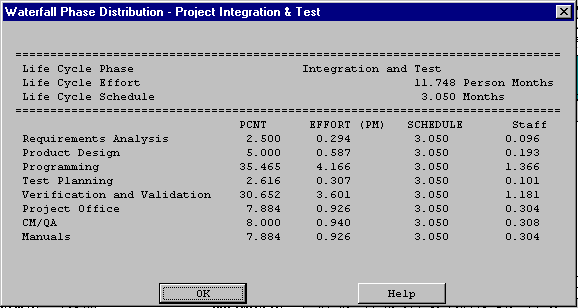
FIGURE 6-6 Waterfall Model Integration and Test Window for the Overall Project
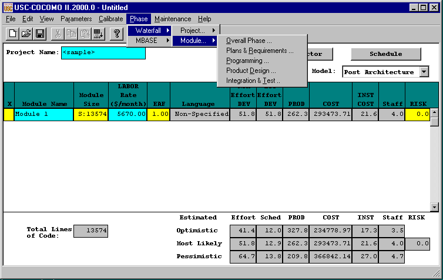
FIGURE 6-7 Phase Distribution Module Sub-menu
6.2 Waterfall Model - Module Phase Distribution
For the waterfall model there are four formats for viewing that will appear in another menu: overall phase, plan & requirements, programming, and integration & test (see FIGURE 6-7). Each of these menu selections will be discussed in the upcoming sections. The phase distribution of plan & requirements, programming and integration & test are broken down into activities. These activities include: requirements analysis, product design, programming, test planning, verification & validation, Module office, CM/QA, and manuals. For each of these activities, the percentage of the phase, the estimated effort, the estimated schedule, and the estimated FSWP is displayed. A description of each of these activities follows:
Requirements analysis: Determination, specification review and update of software functional, performance, interface, and verification requirements.
Product Design: Determination, specification, review and update of hardware-software architecture, program design, and database design.
Programming: Detailed design, code, unit test, and integration of individual computer program components. Includes programming personnel planning, tool acquisitions, database development, component level documentation, and intermediate level programming management.
Test Planning: Specification, review, and update of product test and acceptance test plans. Acquisition of associated test drivers, test tools, and test data.
Verification & Validation(V&V): Performance of independent requirements validation, design V&V, product test, and acceptance test. Acquisition of requirements and design V&V tools. "Are we building the product right?" and "are we building the right product?"
Module Office Functions: Module level management functions. Includes Module level planning and control, contract and subcontract management, and customer interface.
Configuration Management and Quality Assurance (CM/QA): Configuration management includes product identification, change control, status accounting, operation of program support library, development and monitoring of end item acceptance plan. Quality assurance includes development and monitoring of Module standards, and technical audits of software products and processes.
Manuals: Development and update of users' manuals, operators' manuals and maintenance manuals.
In order to view the phase distribution of an entire Module, the user can click on the Module Phase Distribution button under the Phase Distribution menu. When choosing any of the views of phase distribution, you will be confronted with a module selection window (see FIGURE 6-8). At this point, you may choose which module is to be viewed by clicking on the desired module name, which will be highlighted after the click. Click the OK button in order to initiate phase distribution of the chosen module.
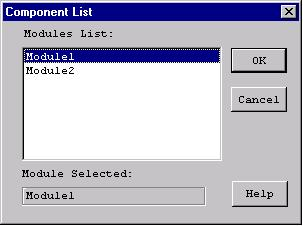
FIGURE 6-8 Module selection window
6.2.1Waterfall Overall Module Phase
The overall phase distribution allows the user to view an entire Module's estimated effort, schedule and number of personnel needed for phase completion. Upon clicking on "Overall Phase," a window will be displayed showing the phase breakdown four formats for viewing will appear in another menu: overall phase, plan & requirements, programming, and integration & test (see FIGURE 6-9). To exit from this window click the OK button.
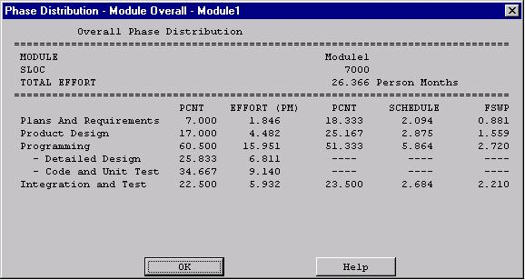
FIGURE 6-9 Phase Distribution window displaying a sample Module's overall phase distribution
In addition, each phase of the Module's development cycle is represented by the estimated effort, the estimated schedule and the estimated number of personnel needed for phase completion. Again looking at FIGURE 6-9, the information has been separated into columns. The first column displays the phase name. The second column displays the percentage that the corresponding phase takes in the estimated effort. The third column displays the estimated effort for each phase. The fourth column displays the percentage of the estimated schedule that is dedicated to the corresponding phase's completion. The fifth column displays the estimated schedule for phase completion. And the last column displays the estimated number of personnel needed for phase completion (FSWP).
Note: The programming phase has been broken down into two additional phases: "Detailed Design" and "Code and Unit Test." The detailed design is a follow-up to the product design phase. In this sub phase, those points developed in the product design are elaborated to a point necessary to breakdown agreed functions into units necessary for coding. The code and unit test sub phase houses the actually coding effort of the individual units of code. The testing of these units (upon completion) is also encompassed within this sub phase.
6.2.2 Waterfall Plans and Requirements Module PhaseThe plans and requirements phase distribution allows the user to view the components of this particular phase. When the Plans and Requirements distribution is chosen from the Module Phase distribution menu, the window shown in FIGURE 6-10 is displayed. This window displays the following information: Module name, the total Module SLOC, the total estimated Module effort, and the total estimated Module schedule. In addition the window displays the activities requirements analysis, product design, programming, test planning, verification & validation, Module office, CM/QA, and manuals. These activity estimates are accompanied with a percentage of the phase effort that they encompass, the estimated effort, schedule and FSWP for the activity's completion as shown in FIGURE 6-10. To exit from this window click the OK button.
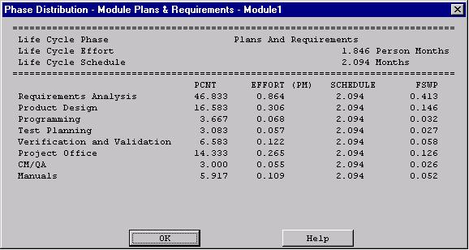
FIGURE 6-10 Plans and Requirements Phase window for the overall Module
6.2.3 Waterfall Programming Module PhaseThe programming phase distribution allows the user to view the components of this particular phase. When the Programming distribution is chosen from the Module Phase distribution menu, the window shown in FIGURE 6-11 is displayed. This window displays the following information: Module name, the total Module SLOC, the total estimated Module effort, and the total estimated Module schedule. In addition the window displays the activity's requirements analysis, product design, programming, test planning, verification & validation, Module office, CM/QA, and manuals. These activity estimates are accompanied with a percentage of the phase effort that they encompass, the estimated effort, schedule and FSWP for the activity's completion as shown in FIGURE 6-11. To exit from this window click the OK button.
FIGURE 6-11 Programming Phase window for the overall Module
The product design phase distribution allows the user to view the components of this particular phase. When the Product Design distribution is chosen from the Module Phase distribution menu, the window shown in FIGURE 6-12 is displayed. This window displays the following information: Module name, the total Module SLOC, the total estimated Module effort, and the total estimated Module schedule. In addition the window displays the activities requirements analysis, product design, programming, test planning, verification & validation, Module office, CM/QA, and manuals. These activity estimates are accompanied with a percentage of the phase effort that they encompass, the estimated effort, schedule and FSWP for the activity's completion as shown in FIGURE 6-12. To exit from this window click the OK button.
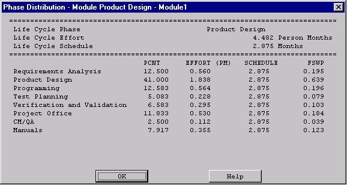
FIGURE 6-12 Product Design window for the overall Module
The integration & test phase distribution allows the user to view the components of this particular phase. When the Integration and Test distribution is chosen from the Module Phase distribution menu, the window shown in FIGURE 6-13 is displayed. This window displays the following information: Module name, the total Module SLOC, the total estimated Module effort, and the total estimated Module schedule. In addition the window displays the activities requirements analysis, product design, programming, test planning, verification & validation, Module office, CM/QA, and manuals. These activity estimates are accompanied with a percentage of the phase effort that they encompass, the estimated effort, schedule and FSWP for the activity's completion as shown in FIGURE 6-13. To exit from this window click the OK button.
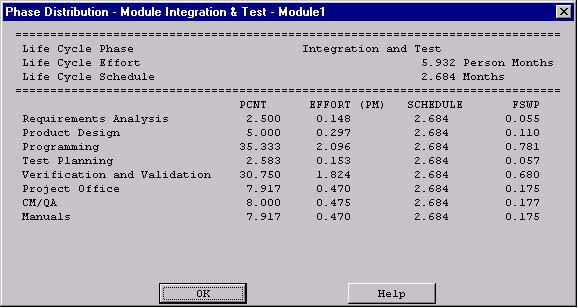
FIGURE 6-13 Waterfall Integration & Test window for the overall Module
6.3 Mbase Model - Project Phase Distribution
6.3.1 Mbase Model Project Overall Phase
In the figure below you see the screen that results from the Mbase Model Project Overall menu item.
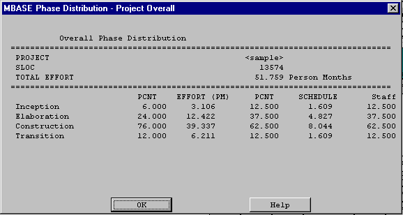
Figure 6-14 Mbase Model Project Overall
6.3.2 Mbase Model Project Inception
In the figure below you see the screen that results from the Mbase Model Project Inception menu item.
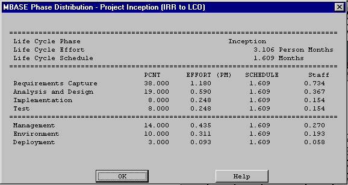
Figure 6-15 Mbase Model Project Inception
6.3.3 Mbase Model Project Elaboration
In the figure below you see the screen that results from the Mbase Model Project Elaboration menu item.
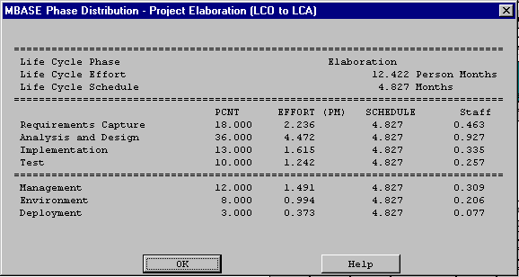
Figure 6-16 Mbase Model Project Elaboration
6.3.4 Mbase Model Project Construction
In the figure below you see the screen that results from the Mbase Model Project Construction menu item.
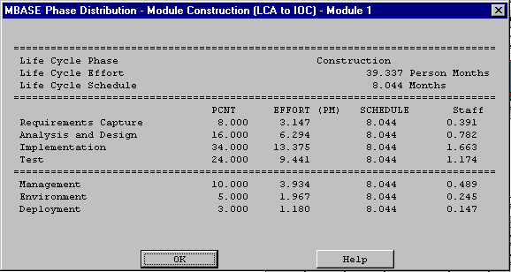
Figure 6-17 Mbase Model Project Construction
6.3.5 Mbase Model Project Transition
In the figure below you see the screen that results from the Mbase Model Project Transition menu item.
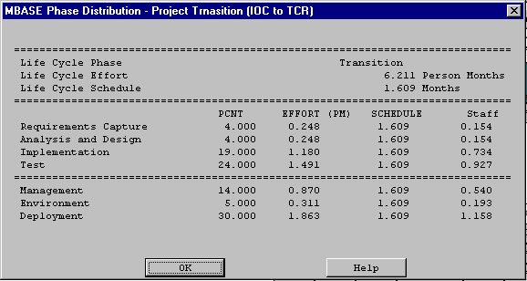
Figure 6-18 Mbase Model Project Transition
6.4 Mbase Model - Module Phase Distribution 6.4.1 Mbase Model Module Overall PhaseIn the figure below you see the screen that results from the Mbase Model Module Overall phase menu item.
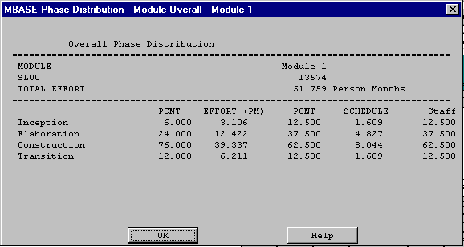
Figure 6-19 Mbase Model Module Overall
In the figure below you see the screen that results from the Mbase Model Module Inception Phase window.
Figure 6-20 Mbase Model Module Inception
6.4.3 Mbase Model Module Elaboration PhaseIn the figure below you see the screen that results from the Mbase Model Module Elaboration Phase window.
Figure 6-21 Mbase Model Module Elaboration
6.4.4 Mbase Model Module Construction PhaseIn the figure below you see the screen that results from the Mbase Model Module Construction Phase window.
Figre 6-22 Mbase Model Module Construction
6.4.5 Mbase Model Module Transition PhaseIn the figure below you see the screen that results from the Mbase Model Module Transition Phase window
Figure 6-23 Mbase Model Module Transition